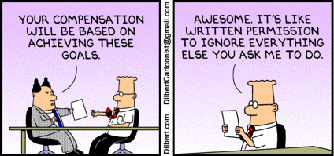
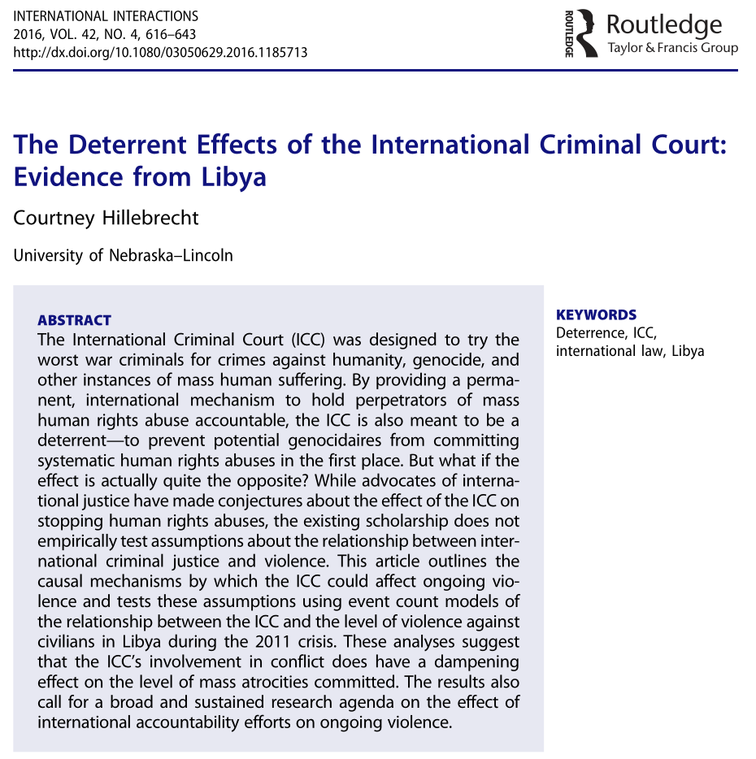
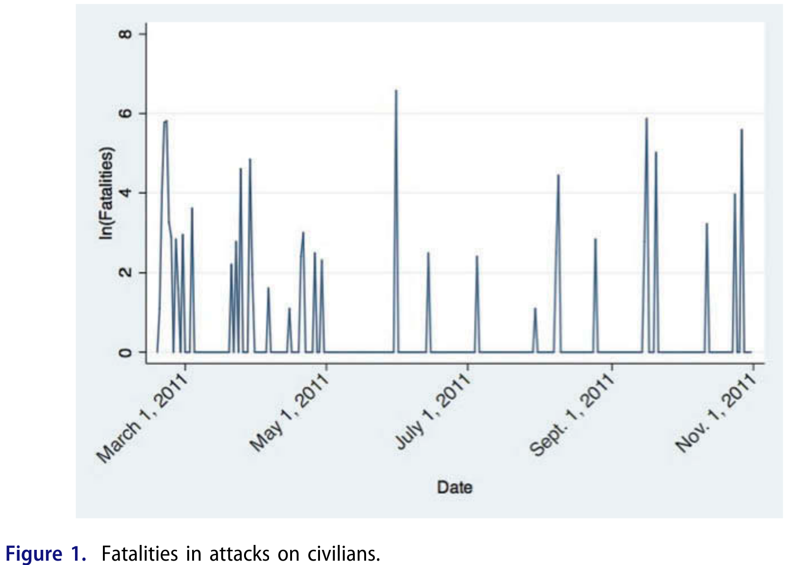
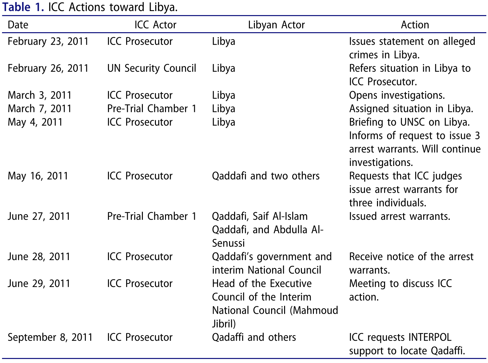
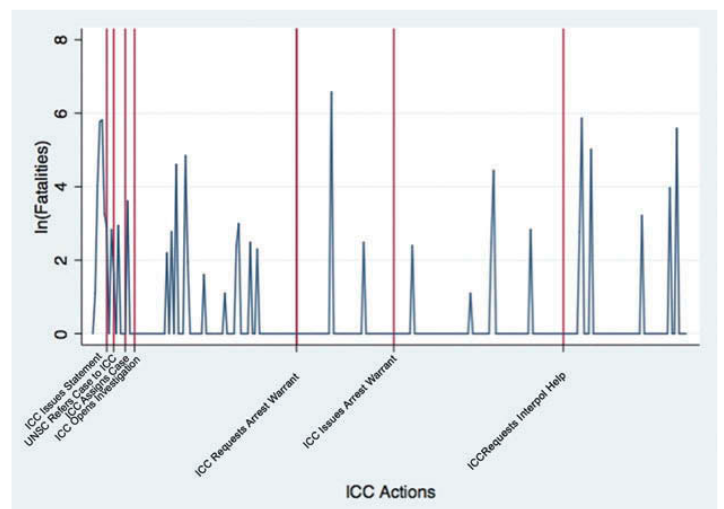
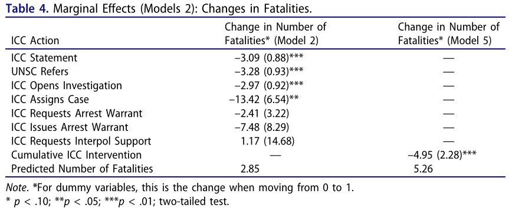

Section 2: How effective have international institutions been in reducing the use of torture by governments around the world?
Justin Leinaweaver (Fall 2026)
How effective have international institutions been in reducing the use of torture by governments around the world?
Week 6: Defining and Measuring the Outcome
Week 7: The Convention Against Torture (CAT)
Week 8: Explaining the Effect of the CAT on Torture
Week 9: The International Criminal Court (ICC)
Week 10: Can the ICC help us reduce global torture?
Week 11: Case Studies of ICC Effectiveness
How effective have international institutions been in reducing the use of torture by governments around the world?
Week 6: Defining and Measuring the Outcome
Week 7: The Convention Against Torture (CAT)
Week 8: Explaining the Effect of the CAT on Torture
Week 9: The International Criminal Court (ICC)
Week 10: Can the ICC help us reduce global torture?
Week 11: Case Studies of ICC Effectiveness
Principal-Agent Theory (Hawkins, Lake, Nielson & Tierney 2006)

Benefits of Delegation
Divide the labor & create gains from specialization
Managing policy externalities
Facilitating collective decision-making
Resolving disputes
Enhancing credibility
Control Mechanisms
Rules vs Discretion
Monitoring and Reporting Requirements
Screening and Selection Procedures
Institutional Checks and Balances
Sanctions

The International Criminal Court and the Crisis in Libya


Interests
Institutions
Interactions
Interests
Institutions
No (or minimal) domestic legal constraints on using repression or committing atrocities
The ICC provides a framework for accountability at the international level
Interactions
The ICC’s deterrent effect on repression or atrocities increases as:
Hillebrecht (2016): Data Sources & Measurements
Outcome Variables
Predictor Variables


Hillebrecht (2016): Interactions
The ICC’s deterrent effect on repression or atrocities increases as:
Hillebrecht, C., & Straus, S. (2017). Who Pursues the Perpetrators? State Cooperation with the ICC. Human Rights Quarterly, 39(1), 162–188.